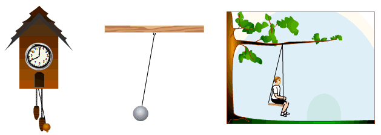
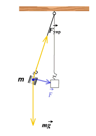
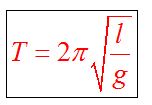
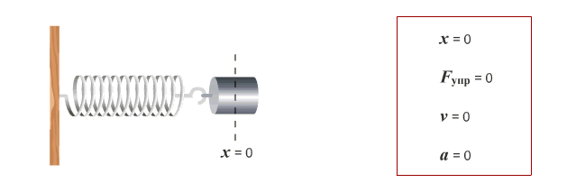
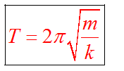

Особый вид неравномерного движения - колебательное. Это движение, которое повторяется с течением времени. Механические колебания - это движения, которые повторяются через определенные промежутки времени. Если промежутки времени одинаковые, то такие колебания называются периодическими.
Это система взаимодействующих тел (минимум два тела), которые способны совершать колебания. Простейшими колебательными системами являются маятники.
Это материальная точка, подвешенная на тонкой нерастяжимой и невесомой нити. Если отклонить маятник от положения равновесия, то сила тяжести и сила упругости будут направлены под углом. Равнодействующая сила уже не будет равна нулю. Под воздействием этой силы маятник устремится к положению равновесия, но по инерции движение продолжится и маятник отклоняется в другую сторону. Равнодействующая сила его снова возвращает. Далее процесс повторяется.
Период колебаний математического маятника зависит от его длины, определяется по формуле
Это груз, прикрепленный к пружине, массой которой можно пренебречь. Пока пружина не деформирована, сила упругости на тело не действует. В пружинном маятнике колебания совершаются под действием силы упругости.
 